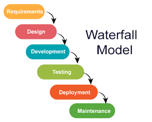
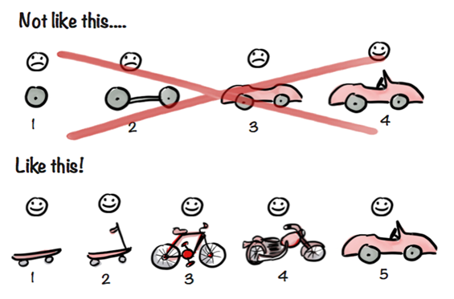
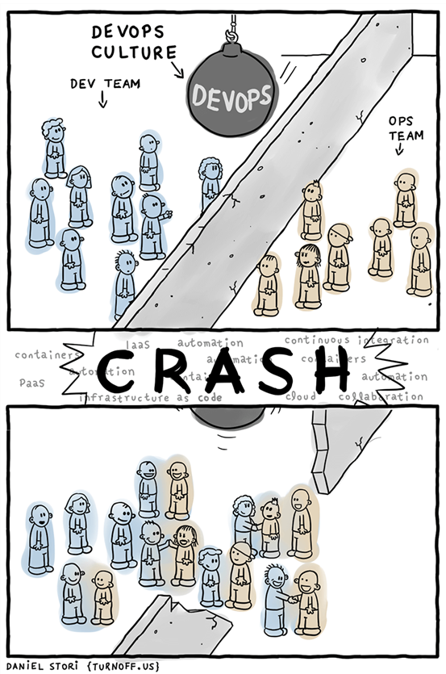
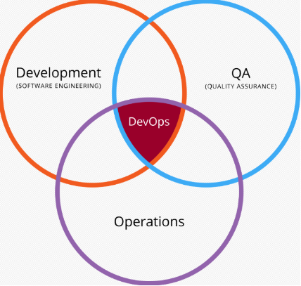
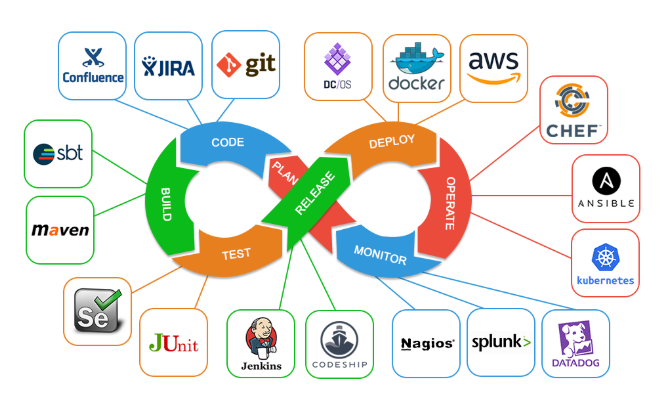
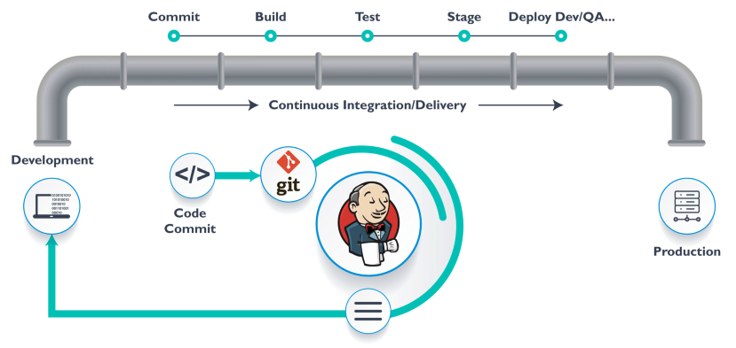

0. 前言
实习期间，组长给每位实习生布置了一份作业——关于CI/CD，devops的个人理解和可行性。实话实说，我最喜欢带薪学习了。
1. 从瀑布模型谈起
在谈起CI/CD、DevOps等之前，不得不提起软件工程开发模型的鼻祖——瀑布模型。
20世纪70年代，软件工程概念刚刚被提出，温斯顿·罗伊斯（Winston Royce）就提出了著名的瀑布模型。
瀑布模型将软件开发过程分为：需求分析、详细设计、编码、测试、运行维护等几大阶段，如下图：

瀑布模型对软件开发的过程进行了严格的划分，并规范了各阶段的文档要求和质量保证。相信学过软件工程的同学，对此肯定是再熟悉不过了。而且在个人项目中，大多都是这样开发模式。
但，瀑布模型存在着其显著的缺点：每个阶段必须依赖于前一阶段的完成，缺乏并行性；一旦进行开发阶段，需求很难变更；每个阶段周期长，软件交付周期长达数月甚至数年，导致用户反馈不及时，很多的问题在最后才会暴露出来。
20世纪末期，软件需求剧增，瀑布模型已经不能满足软件工作者了。于是，迭代模型、快速原型模型、螺旋模型等新一代软件开发模型逐渐涌现出来。
到了21世纪初，软件工程大师们总结了当时轻量级的软件开发方法，进而提出了敏捷开发。
2. 敏捷开发
时至今日，敏捷开发（agile development） 已经成为了非常流行的软件开发方法。
敏捷开发并未提出相关的模型或者工具，更多的是一种概念。以我理解，它的核心是迭代开发和增量开发：
- 迭代开发：将开发分为很多个小周期，每个小周期都包括着分析、设计、编码、测试、发布等步骤。
- 增量开发：迭代开发中，并没有说明如何划分迭代，而增量开发则是按照新增功能来划分迭代。
简单地来说，在敏捷开发中，开发者可以尽早地发布一个具有核心功能但不完善的简单版本，然后不断迭代地进行更新。如下图：

举个似是而非的例子，去餐馆点10个菜，如果是瀑布模型，可能把10个菜做完一起上，而敏捷开发则是先上第一个主菜，然后接着上后续的菜。
显然可以看出，敏捷开发的首要优点就是快速上线，而快速上线则能及时地得到用户反馈，进而可以不断地完善、贴近市场、降低软件风险，甚至调整软件方向。
在这个市场日新月异的时代，敏捷开发更符合大多数开发者的口味。
敏捷开发的4个价值观：
- 程序员的主观能动性，以及程序员之间的互动，优于既定流程和工具。
- 软件能够运行，优于详尽的文档。
- 跟客户的密切协作，优于合同和谈判。
- 能够响应变化，优于遵循计划。
3. DevOps
如果说敏捷开发是已经存在20年的老大哥，那 DevOps 就是初出茅庐的小青年。
DevOps 概念于2009年被提出，与敏捷开发一样，它也是一种软件开发方法。并且，它也没有明确的定义，更多的像是一种文化、一个运行。有人会认为 DevOps 属于敏捷开发，也有人认为并不如此。
DevOps 提出的初衷是打破开发人员（Development）和运维人员（Operations）之间的壁垒（线上发布80%的问题可以甩锅给运维，同样也可以甩锅给开发），突出重视软件开发人员和运维人员的沟通合作。开发即运维，运维即开发。

同时，你也可以把 DevOps 看作开发、运维和质量保障（QA）三者的交集。

在我看来，DevOps 是敏捷开发的继承，也是发展。敏捷开发强调“短平快”的开发节奏，而 DevOps 则在这基础上，进一步强调开发与运维的关系。同时，DevOps 的发展也得益于自动化工具的不断完善，以及容器、K8S、云服务等新技术的出现。尤其是容器和K8S发展起来后，DevOps 更加火热了。
而这些自动化工具、新技术的加入，逐渐形成了 DevOps 的整套开发流程：计划，编码，构建，测试，发布，部署，运维，监控，反馈，使得 DevOps 更加敏捷方便。如下图所示：

4. CI/CD
如果说 DevOps 是一种软件开发方法的话，那么 CI/CD 就是 DevOps 的一些实践。
CI（Continuous Integration，持续集成），指的是开发人员持续地（不断地）向 master 分支提交代码。提交之后，自动化工具（如：Jenkins）会自动拉取代码，并进行自动化构建和测试，最终将结果发聩给开发人员。CI 使开发人员以一个个的小功能为目标，频繁地向主干分支提交代码，从而进行频繁的构建和测试，让错误能更早地暴露给开发人员，降低软件的风险。
CD（Continuous Delivery，持续交付）/（Continuous Deployment，持续部署），CD 有两个解释，对于两者的区别，似乎也没有明确的定义。在我看来，持续部署，指的是 CI 完成后，自动化地将产品部署到生产测试环境进行测试；而持续交付，是指如果部署没有产生问题，则交付给用户。

可以看出，CI/CD 的重点在于：持续与自动化。持续，是为了测试能够更加的频繁，从而保证产品的质量；而自动化，则使整个流程更加的便捷，大大地节约了时间与人力成本。
当然，CI/CD 并不只属于 DevOps ，DevOps 也不是只有 CI/CD 。
5. 总结
从瀑布模型到 DevOps ，软件开发方法越来越完善，软件开发也越来越高效、快速。DevOps 所提倡的开发与运维间的协作、自动化的流水线、持续的集成部署交付等，是值得推崇的。但是，并不能为了 DevOps 而做 DevOps，更不能以频繁的发布次数为荣。我们在享受持续与自动化带来的快速与便捷同时，也要关注代码的质量。